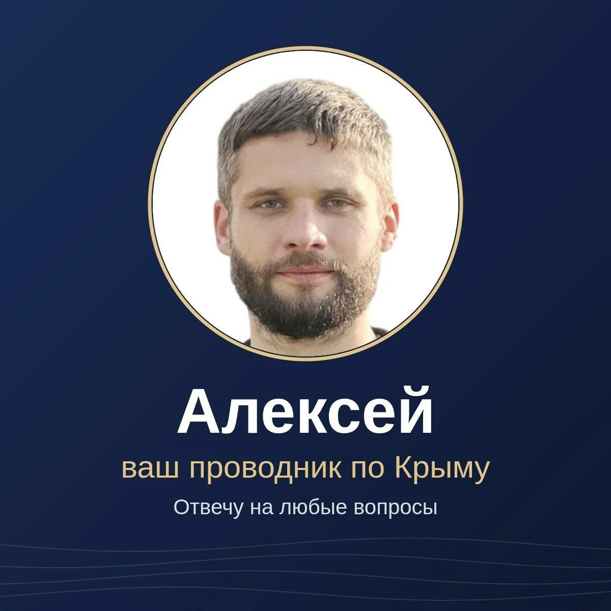

Посёлок «Скиф»
от 500 000 ₽
Клубный посёлок в 2 км от моря. Участки на разном расстоянии от воды, подберу по подъезду и коммуникациям.

Щёлкино · Восточный Крым · Азовское море
От 4 соток, в пешей доступности от центра города. Цена зависит от того, какая линия от моря: от 1,2 до 2 млн ₽. Покажу участок по видео и проведу сделку.
Участки у Щёлкино идут тремя линиями от моря. Площадь от 4 соток, все в собственности, к пляжу есть свободный выход.
Для сравнения: по объявлениям на картах рядом участки продаются за 1,9, 2 и 4 млн ₽.
Город-курорт Щёлкино на Азовском море. Рядом мыс Казантип, Мысовое и пляж Космонавтов. Магазины, школа, больница и автобусы в самом городе.
Номер можно проверить на публичной кадастровой карте. Выписку из ЕГРН пришлю по выбранному участку.
Побережье
Нажмите на фотографию, чтобы рассмотреть её целиком
Для большого дома или своего проекта. Панорамный вид на море. Цена от 4,5 до 5 млн ₽. Разрешённое использование и ограничения проверим по конкретному участку до сделки.
По соседству с участками, у самого моря, группа компаний «Точка притяжения» развивает свой участок около 2,4 га под туристический комплекс.
90:07:200601:2273
от 500 000 ₽
Клубный посёлок в 2 км от моря. Участки на разном расстоянии от воды, подберу по подъезду и коммуникациям.
от 700 000 ₽
Для дачи или дома с пропиской. Коммуникации уточним по выбранному участку.

Меня зовут Алексей. Большинство наших покупателей не из Крыма, поэтому я показываю участки по видео: дорогу, соседей, вид на море, что видно с участка.
Уточняю бюджет и задачу, присылаю 3–5 вариантов с ценами.
Показываю выбранные участки онлайн или на месте.
Выписка ЕГРН, разрешённое использование, ограничения.
Безопасные расчёты через Домклик, регистрация в Росреестре. Рассрочка до 6 месяцев, взнос от 100 000 ₽, условия зависят от участка.
Оставьте телефон и выберите, что интересует. Перезвоню или напишу туда, где вам удобнее.